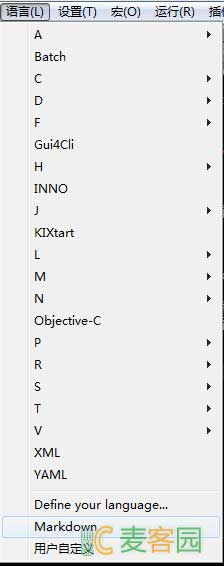

Notepad++ 是一款非常友好的编辑器，轻巧、便捷、高效、插件丰富… 同时 Notepad++ 支持用户自定义语法高亮
GitHub上已经有人编写好开源的 Markdown 规则： https://github.com/thomsmits/markdown_npp
开始菜单 -> 运行(或者直接按 Ctrl+R) -> 输入 %APPDATA%\Notepad++ 将 userDefineLang.xml 放置到此目录 重启 Notepad++
在语言菜单下可以看到自定义的 Markdown 高亮规则。

因Github里的高亮支持文件表现不是非常理想，所以我加以修改并分享出来。
点击下载我的Markdown高亮代码文件